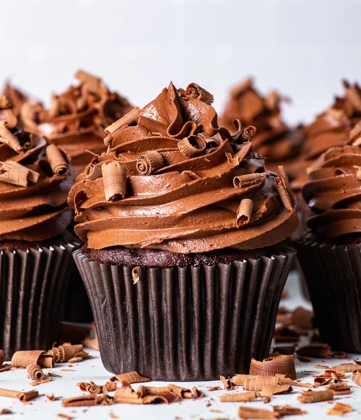

Cupcakes veganos de chocolate
Estos cupcakes veganos de chocolate sin gluten son simplemente PERFECTOS: húmedos, esponjosos y ricos, y cubiertos con la más increíble y suave crema de mantequilla vegana de chocolate de lujo. Son increíblemente fáciles de hacer y solo utilizan los ingredientes de despensa habituales: ¡no se necesitan ingredientes extraños ni sustitutos de huevo! Además, son prácticamente indistinguibles de los cupcakes "regulares" - nunca sabrías que están hechos sin gluten, huevos o lácteos.

Ingredientes:
Cupcakes veganos de chocolate
- 90 g de chocolate negro (60-70% de sólidos de cacao), picado
- 55 g de aceite de girasol u otro aceite de sabor neutro de tu elección
- 140 g de agua caliente
- 140 g de leche no láctea a temperatura ambiente (puedes usar leche de almendra, arroz, soja u avena si no eres sensible a ella, pero no recomiendo la leche de coco)
- 35 g de yogur vegano natural
- 1 cucharadita de pasta de vainilla (o 2 cucharaditas de extracto de vainilla)
- 160 g de harina sin gluten
- 200 g de azúcar granulado
- 30 g de cacao en polvo sin azúcar
- 1 1/4 cucharaditas de goma xanthan
- 1 cucharadita de levadura en polvo
- 1/2 cucharadita de bicarbonato de sodio
- 1/2 cucharadita de sal
Crema vegana de chocolate (topping)
- 250 g de mantequilla vegana, a temperatura ambiente
- 180 g de azúcar glas
- 65 g de cacao en polvo
- 1/4 - 1/2 cucharadita de sal (puedes ajustar la cantidad a tu gusto)
- 120 g de chocolate negro (60-70% de cacao), derretido y enfriado hasta que esté tibio
Preparación:
Cupcakes veganos de chocolate
- Ajusta la rejilla del horno a la posición media, precalienta el horno a 320°F o 160°C y coloca los moldes para cupcakes en una bandeja para muffins con revestimiento.
- En un recipiente resistente al calor, ya sea en el microondas o sobre una olla de agua caliente, derrita el chocolate y el aceite juntos.
- Agrega el agua caliente, la leche no láctea, el yogur vegano y la vainilla a la mezcla de chocolate y aceite, y bate bien hasta que estén combinados. Deja a un lado hasta que se necesite.
- En un tazón grande, tamice la mezcla de harina sin gluten, azúcar, cacao en polvo, goma xantana, polvo de hornear, bicarbonato de sodio y sal.
- Agrega los ingredientes húmedos a los secos, y mezcla bien (con un batidor de globo grande) hasta obtener una masa de pastel suave y sin grumos de harina. La masa será bastante líquida.
- Divide la masa uniformemente entre los moldes para cupcakes, llenando cada molde alrededor de 2/3 a 3/4 de su capacidad.
- Hornea a 320°F o 160°C durante unos 30-32 minutos o hasta que estén bien subidos y al insertar un palillo salga limpio o con algunas migas húmedas adheridas.
- Deja que los cupcakes se enfríen en el molde para muffins durante aproximadamente 5-10 minutos, luego transfierelos cuidadosamente a un lugar donde puedan enfriarse completamente. Asegúrate de que los cupcakes estén completamente fríos a temperatura ambiente antes de decorarlos con la crema de chocolate vegano.
Crema vegana de chocolate (topping)
- Usando una batidora de mano equipada con varillas dobles o una batidora de pie equipada con el accesorio de paleta, mezcla la mantequilla y el azúcar en polvo tamizado juntos hasta que estén pálidos y esponjosos, durante unos 5 minutos.
- Tamiza en el cacao en polvo y la sal, y bate por otros 2-3 minutos, raspando los lados y el fondo del bol ocasionalmente, hasta que esté completamente combinado.
- Agrega el chocolate derretido y enfriado y bate hasta que esté completamente combinado.
Guardado:
- Los cupcakes de chocolate veganos sin gluten se conservan bien en un recipiente hermético cerrado en el refrigerador durante 3-4 días.